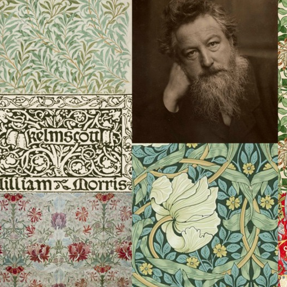
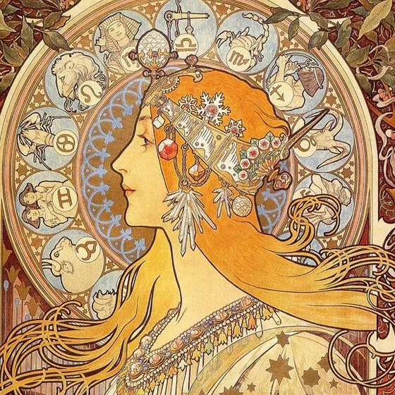
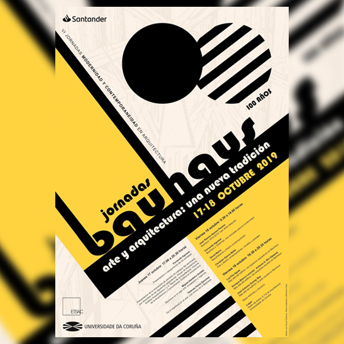
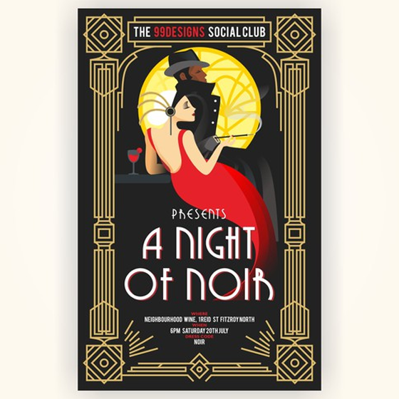
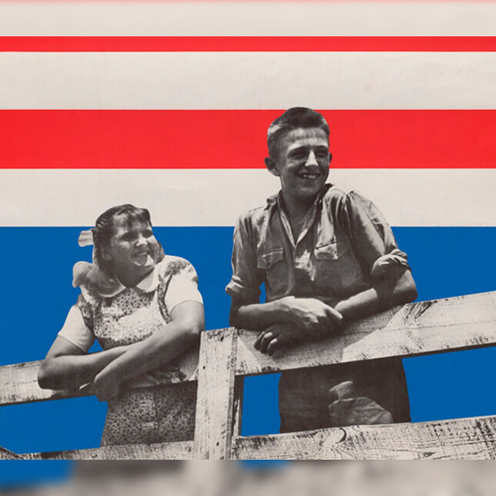
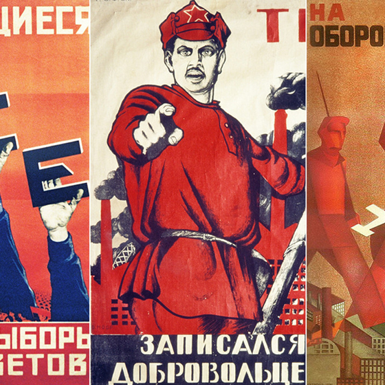
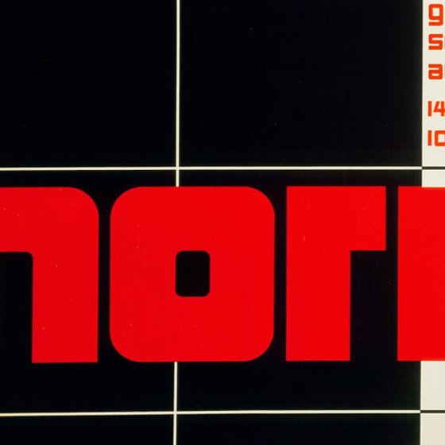
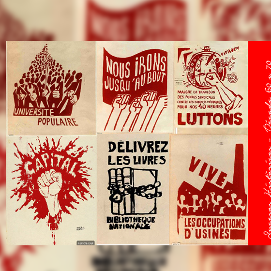
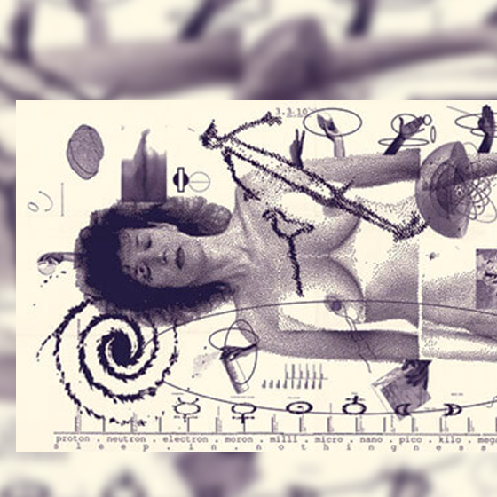

Diseñador 1.0
La comunicación gráfica nos ha acompañado durante toda nuestra historia: pinturas rupestres, símbolos, escritura,… pero, aunque todo esto esté relacionado y haya contribuido, es muy difícil elegir una fecha en la que el diseño aparece tal y como lo concebimos
ahora.
He decidido comenzar la historia del diseño gráfico desde finales del siglo XIX, un buen punto de partida para poder comprender los acontecimientos, principales corrientes y algunos artistas
que han ayudado al diseño gráfico a ser lo que es en la actualidad.
-

SIGLO XIX
A finales del siglo XIX la cultura occidental se enfrenta a profundos cambios a consecuencia de la revolución industrial y el desarrollo tecnológico. Las ciudades crecen convirtiéndose en urbes y los avances en la comunicación y el transporte hacen que fluyan más las ideas La producción en masa de las industrias hace que el producto artesano pierda valor, pero en el Reino Unido llega la intención de devolver el valor al mismo por parte de William Morris y el movimiento Arts and Crafts.
-

Modernismo
Intenta fusionar arte y vida, influido por la filosofía de John Ruskin y William Morris, rompiendo con anteriores movimientos. como el historicismo, el realismo o el impresionismo.
Utiliza elementos de la naturaleza para dar movimiento a sus obras, haciendo que el componente orgánico tenga un fuerte protagonismo. Un arquitecto -

La escuela Bauhaus
Fue una importantísima escuela que combinaba diseño, arte y arquitectura. Influenciados también por el constructivismo, estudiaban la forma, el color y la importancia del color en el diseño, los materiales, la composición o el espacio e intentó aportar valor estético al producto industrial para su resurgimiento después de la primera guerra mundial. En 1925 la escuela se trasladó a Dessau donde creció el interés en la parte más práctica del objeto.
-

Art Decó
Al mismo tiempo que en Alemania se desarrollaba la Bauhaus, en Francia y otros países europeos optaron por un movimiento distinto.
Después de la guerra, el estilo decorativo del modernismo empezó a sustituirse por trazos más simples y rectilíneos, más en armonía con la estética plana y el menor coste de los diseños industriales. Hablamos del Art Decó. -

Los años 30
En las primeras décadas del siglo XX varios diseñadores independientes del Art Decó y la Bauhaus, hicieron aportaciones significativas a la tipografía como Gill Sans, Futura o el movimiento Isotype creado por Neurath.
Pero, sin duda, la aportación más importante fue la que hizo Jan Tschichold (1902-1974) con “La Nueva Tipografía”. -

2° Guerra Mundial
Durante la guerra, tanto durante la primera como durante la segunda, muchos diseñadores encaminan su trabajo a motivar a la población para apoyar a su país en la guerra.
Con la Primera Guerra Mundial pero sobre todo, tras la revolución rusa, nace el concepto de cartel político o de propagandacartel político o de propaganda, motivado por la necesidad de los gobiernos de movilizar y manipular a las masas. -

Los años 50
El nuevo estilo nacido los años 50 llegará a ser el predominante en la historia del diseño grafico hasta los años 70 y una referencia imprescindible en la época actual.
revolucionaron el mundo del diseño, especialmente el editorial. Influenciados también por el constructivismo y la Bauhaus los diseñadores de este estilo definían el diseño como una actividad socialmente útil e importante, y dejaban de lado la expresión artística y personal buscando una solución más científica y universal. -

Los años 60 y 70
Los años 60 y 70 se caracteriza por un periodo de fuertes tensiones políticas entre los Estados Unidos y la URSS iniciados después de la 2GM, la “Guerra Fría”.
Derivará en varios acontecimientos importantes, como la carrera espacial o la guerra de Vietnam. La población no aprueba las decisiones de sus gobiernos provocando importantes revoluciones sociales y culturales en EEUU y en Europa. -

Los Años 80
A partir de los años 80, los ordenadores personales y los nuevos programas informáticos gráficos ofrecieron a los diseñadores la oportunidad de jugar con la relación del texto con la imagen.
La aparición de Internet supone la globalización de la información y una gran revolución en la comunicación.
La sociedad de consumo comenzó a forjarse a principios de siglo y la cultura popular ya domina el campo visual. La era digital trajo consigo cambios en la percepción del espacio y la composición abriendo paso a un nuevo lenguaje gráfico con nuevas posibilidades para la tipografía y las imágenes.
¿QUÉ ES UN DISEÑADOR 2.0?
01
Nacimiento
La llegada de Internet en el año 2004 mejoro, cambio y actualizo las herramientas y tareas de los diseñadores... Ver todo
02
Habilidades
Los programas de diseño eran muy rudimentarios y la mayoría del trabajo tomaba mucho tiempo y no existian flujos defi... Ver todo
03
Competitividad
Muchos diseñadores pasaron de diseñar Flash a programar con html y css, intentado hacer webs cada vez mas espectaculares ... Ver todo
04
Salarios
Un diseñador puede tener distintos roles. Algunos en la programación otros dedicados a la experiencia de los usuarios en ... Ver todo
¿QUÉ ES UN DISEÑADOR 3.0?
01
Definición
La tecnológica exige de nosotros actualización y cambios. ¿Cómo nos estamos preparando para este cambio?... Ver todo
02
Cambios
Ahora se espera de nosotros una implicación más cercana al código y al desarrollo ... Ver todo
03
Tecnologías
Muchos diseñadores pasaron de diseñar Flash a programar con html y css, intentado hacer webs cada vez mas espectaculares ... Ver todo
04
Encuentas
Se hizo una leve encuesta con 10 preguntas sobre las palabras clave y nuevas tecnologías, estos fueron los resultados ... Ver todo
MUCHAS GRACIAS
Duvan Alexis Valencia Munca